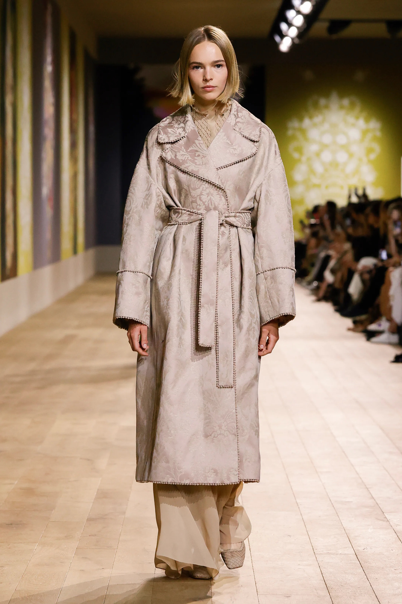
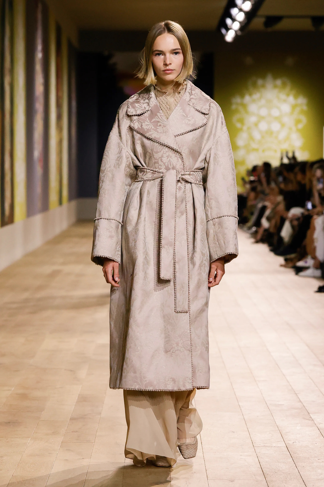

Per la collezione haute couture Dior Autunno-Inverno 2022-2023 , Maria Grazia Chiuri ha voluto esaltare l'eleganza, l'armonia e la delicatezza della moda attraverso l’albero della vita .
Questo sostiene i cieli e li collega mediante ramificazioni e radici con la terra e il sottosuolo.
In prossimità vi sono alcuni dei capi della collezione da noi più amati


 
